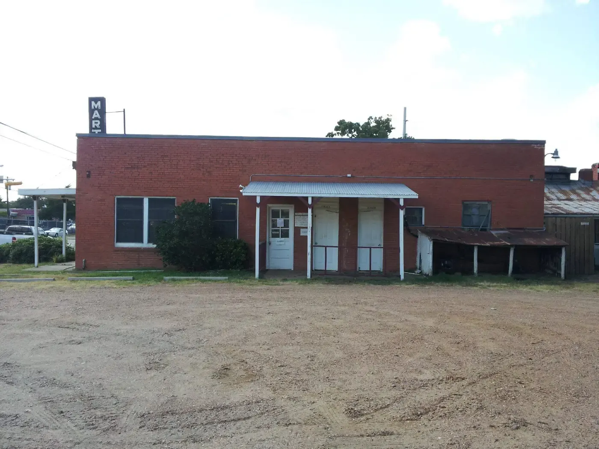

Martin's Place
One family. One building on South College. A hundred years of barbecue cooked the same way it always has been.
From a country road to a landmark.
Slide the year and watch the photo age. Everything here comes from Martin's Texas Historical Marker, the 2025 county proclamation and local news.
One family. One pit.
Martin's has been run by the same family since day one. The Brazos County Commissioners Court honored Steve Kapchinskie and the family for the 100th anniversary in July 2025, calling Martin's one of the oldest family-run barbecue joints in Texas.
Cooked the way barbecue was intended.
Brisket, pork ribs, sausage and chicken, plus the sides regulars drive across town for.


On the board
- Brisket
- Pork ribs
- Sausage
- Chicken
- Chopped beef sandwich
- House potatoes
- Fried okra
- Corn nuggets
- German potato salad
- Loaded fries
Brisket, rib and sausage photos are placeholders until we shoot the real thing at the pit.
A time warp on College Ave.
MARTIN'S PLACE
In December 1924, Martin Kapchinskie bought land here, along a one-lane country road connecting Bryan to Texas A&M. He opened a store for travelers, offering groceries, a public telephone, gasoline and barbecue.
After World War II his son Albin, who had served as a Navy butcher, joined him and added a meat market in 1951. Longtime patrons remember "Uncle" Steve Holik, who served tables from 1946 until 1987, and the daily domino games. The world around it grew fast. Martin's Place hardly changed.
Summarized from the 2005 Texas Historical Marker, Brazos County"Like an old friend."
Excellent food, everything fried to order. The corn nuggets are a bit of Heaven on Earth.
Stephanie M., Yelp review
I believe it's a great landmark. It speaks volumes.
Johnny L. of College Station, to KBTX, May 2025
3403 S. College Ave
Bryan, TX 77801
When the meat's gone, it's gone. Call ahead to be sure.
Come hungry
Dine in or take it home. Call ahead for big orders.
Call (979) 822-2031 Get directions Follow on Facebook